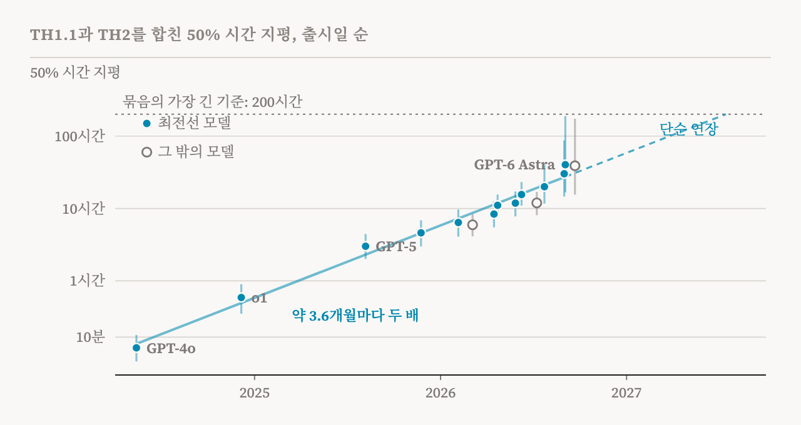
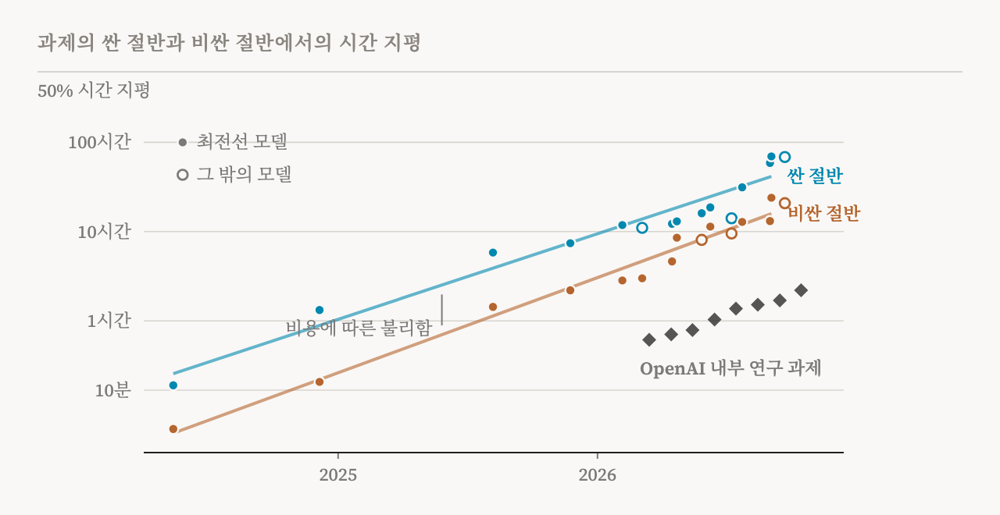
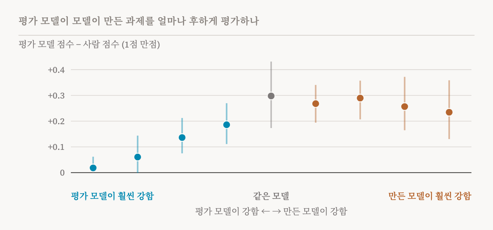

2025년 3월, 최전선 AI 모델(frontier AI model)의 능력을 평가하는 비영리 단체 METR가 AI 에이전트의 실력을 추적하는 간단한 방법을 내놓았습니다. 시간 지평(time horizon)입니다. 과제마다 숙련된 사람이 끝내는 데 걸리는 시간을 재어 두고, 모델이 절반의 확률로 성공하는 과제 길이를 찾습니다. 당시 가장 뛰어난 모델이던 Claude 3.7 Sonnet의 시간 지평은 약 1시간이었습니다. 1년이 안 되어 모델들은 METR의 과제 묶음을 사실상 다 풀어 버렸습니다. 그 묶음에는 사람이 30시간까지 걸리는 과제가 들어 있었습니다.
2026년 11월 20일 METR는 Opus 5.5와 GPT-6 Astra까지의 공개 모델을 다룬 최신 보고서를 냈습니다. 제목에 소식의 두 면이 모두 담겨 있습니다. AI 연구 개발에 관련된 능력이 "빠르게 좋아지고 있고, 재기는 점점 어려워지고 있다"는 것입니다. 핵심 결론은 조심스러운 부정문입니다. METR는 지금 공개된 증거만으로는 앞으로 2년 안팎에 AI 연구 개발이 급격하게 가속될 가능성을 배제할 수 없다고 씁니다. 여기서 급격한 가속이란 능력이 너무 빨리 좋아져서, 새 AI 시스템이 가져올 파국적 위험을 사람이 제대로 이해하고 평가하고 대응할 수 없게 되는 상황을 말합니다.
이 글은 보고서를 따라 읽습니다. METR가 무엇을 쟀는지, 모델이 무엇을 할 수 있고 아직 무엇을 못 하는지, 수치가 얼마나 빨리 움직이는지, 그리고 METR가 왜 자기 잣대가 닳고 있다고 보는지를 차례로 살핍니다. 마지막 대목은 이 사이트가 거듭 다뤄 온 질문과 이어집니다. 모델이 하는 일을 지켜보는 것만으로 모델에 대해 얼마나 알 수 있을까요?
왜 AI 연구를 지켜보는가
METR가 주목하는 것은 AI 연구 자체를 빠르게 할 수 있는 능력입니다. 모델이 다음 모델을 만드는 일의 상당 부분을 해낸다면 발전이 스스로를 키울 수 있고, 새 시스템이 나온 뒤 다음 시스템이 나오기까지 사람이 그것을 살펴볼 시간은 줄어듭니다. 그러려면 어떤 능력이 필요한지는 보고서도 답하지 않고 열어 둡니다. 특히 명확하게 정의된 과제를 잘하는 것만으로 충분한지, 아니면 판단력(judgment)처럼 시험하기 어려운 능력도 필요한지를 묻습니다.
시간 지평에는 원래 분명한 쓸모가 있었습니다. 모델이 아직 한참 모자라니 파국적 위험은 무시할 만하다고 논증할 수 있었습니다. 보고서는 이 논증이 더는 통하지 않는다고 말합니다. 지금의 공개 최전선 모델은 서비스를 해킹하고, 자기가 어떻게 채점되는지 따져 보고, 샌드박스(sandbox)가 걸어 둔 제한을 우회할 수 있습니다. 소프트웨어 과제에서 "모델이 못 하니 위험이 낮다"는 말은 이제 쓸 수 없습니다. 위험에 대해 무언가를 말하려면, METR는 모델이 정확히 무엇을 할 수 있고 무엇을 못 하는지를 하나하나 따져야 합니다.
새 잣대
계속 재기 위해 METR는 더 어려운 과제 묶음 TH2를 만들었습니다. 과제 36개를 12개 갈래로 묶은 것입니다. 그중 8개 갈래는 검증할 수 있는(verifiable) 과제입니다. 최적화 대회, 작은 언어 모델을 빨리 학습시키는 경주, 퍼즐, 게임처럼 자동으로 매긴 점수가 에이전트가 얼마나 잘했는지 알려 줍니다. 나머지 4개 갈래는 검증하기 어렵거나 판단력이 필요한 과제입니다. METR에게 쓸모 있을 평가 과제를 직접 만들거나, 철학 논증에 대한 비평을 평가하는 일 같은 것입니다. 보고서는 TH2를 예전 과제 묶음인 TH1.1(과제 222개)과 함께 분석합니다.
이 과제들을 사람의 실력에 맞춰 재는 일은 어려워졌습니다. METR는 갓 졸업한 이공계 졸업생 대신 해당 분야의 전문가를 모집해 시간당 200~350달러를 주었고, 사람 기준선(baseline)을 얻으려고 7번 시도하는 데 모두 약 9만 달러를 썼습니다. 그래도 과제에 걸리는 시간을 추정할 때 사람이 직접 해 본 결과가 쓰인 경우는 9%뿐입니다. 시간 기준을 정한 새 과제 34개 가운데 31개는 연구자들이 실제 사람 작업 기록을 바탕으로 추정했습니다. 그리고 METR가 사람 기준선을 얻으려 한 과제 3개 모두에서, 최전선 모델이 모집한 전문가를 이겼습니다.
모델이 할 수 있는 것
TH2의 검증 가능한 과제에서 가장 뛰어난 공개 모델의 시간 지평은 최대 27시간입니다. 사람의 결과가 많이 쌓인 곳에서는 더 자세히 비교할 수 있습니다. 몇 달씩 이어지는 최적화 대회인 알 지머만 프로그래밍 대회(Al Zimmermann's Programming Contests)의 지난 회차 15개에서, 가장 강한 모델들은 중앙값으로 사람 참가자 가운데 백분위 96~98에 들었습니다. 참가자들은 석 달을 썼고, 모델은 28코어 컴퓨터에서 48시간을 썼습니다. 그래도 중앙값에 해당하는 대회에서 모델보다 나은 사람이 약 4명 있었습니다. 참가자 가운데에는 루빅스 큐브의 모든 배치를 20수 안에 풀 수 있음을 증명하는 데 참여한 토마스 로키키(Tomas Rokicki)도 있었습니다.
작은 언어 모델을 최대한 빨리 학습시키는 공개 경주인 NanoGPT 스피드런(NanoGPT speedrun)을 예산을 정해 놓고 하는 판에서는, 가장 잘한 에이전트 실행이 48시간 만에 학습을 15.7% 빠르게 만들었습니다. 실력 있는 사람 참가자 상당수보다 낫고, 비용도 적게 들었습니다. 그래도 가장 잘하는 사람은 더 멀리 갔습니다. 코딩에 AI의 도움을 받은 최근 기록 하나는 약 60시간을 들여 학습을 41% 빠르게 했습니다. 에이전트와 사람은 고친 곳도 달랐습니다. 에이전트의 풀이에서는 평균적으로 속도 향상의 64%가 더 빠른 GPU 커널(kernel)에서 나왔지만, 사람의 풀이에서는 24%였습니다. 사람은 필요한 학습 단계 수를 줄이는 쪽을 더 자주 택했습니다.
얼마나 빠른가
TH1.1과 TH2를 합친 과제 묶음에서 시간 지평은 약 3.61개월마다 두 배가 됩니다(95% 신뢰 구간 2.08~4.94개월). 날로 치면 110일로, METR가 전에 찾은 105일과 비슷합니다. 단순하게 연장하면, 모델의 50% 시간 지평은 2027년 7월에 이 묶음의 가장 긴 기준인 200시간에 이릅니다. OpenAI가 최근 공개한 자사 내부 연구 과제 자료도 비슷한 속도, 약 3.8개월을 가리킵니다.

속도가 더 붙고 있을까요? TH2의 검증 가능한 과제만 따로 보면 두 배가 되는 시간이 1.65개월로 더 짧습니다. 다만 신뢰 구간이 0.79~3.99개월로 넓습니다. 합친 추세 안에 실제 가속이 숨어 있을 수도 있습니다. 모델이 더 어려운 TH2 과제에 손이 닿기 시작하면서 합친 수치를 끌어내리기 때문입니다. 하지만 METR는 그럴듯하다고 보는 더 평범한 설명도 내놓습니다. 비슷한 과제들만 모인 좁은 묶음에서는 모델이 핵심 기술을 익히고 나면 더 긴 과제도 금방 풀게 되어서, 두 배가 되는 시간이 짧아 보인다는 것입니다. 또 다른 검증 가능한 과제 묶음인 MirrorCode에서도 2025년 하반기에 이미 비슷하게 빠른 증가가 보였습니다.
METR는 사람의 과제 시간에 기대지 않는 지표도 따로 봅니다. 문항 반응 이론(item response theory, IRT)으로 만든 METR 능력 지수(METR Capability Index, MCI)입니다. 어떤 모델이 어떤 과제를 푸는지의 패턴을 보고 모델과 과제를 한 척도 위에 놓습니다. 공개 최전선 모델 전체로 보면 이 지수에는 뚜렷한 가속도 감속도 없습니다. 개발사별로 따로 맞추면, Anthropic 모델은 2025년 10월 이후 증가 속도가 모든 모델로 지수를 보정했을 때 1.26배, Anthropic 모델로만 보정했을 때 1.46배 빨라졌습니다. 뒤의 값은 Opus 5.5 시스템 카드의 1.53배에 가깝습니다. OpenAI 모델은 0.94배로, 빨라지지 않았습니다. 하지만 METR는 신뢰 구간이 지극히 넓고, 방법을 어떻게 고르느냐에 따라 결과가 달라진다고 말합니다. 이런 지수는 실제 가속을 놓칠 수도 있습니다. 개발사가 가장 강한 모델을 더 오래 공개하지 않고 둘 수 있고, 지수는 언제나 가장 새로운 모델에 대해 가장 불확실하기 때문입니다.
모자란 곳
보고서에서 가장 흥미로운 부분은 모델이 가장 어려워하는 과제와 그 까닭입니다.
METR는 자기 평가 과제가, 개발사들이 요즘 모델을 학습시키는 강화 학습 환경(reinforcement learning environment)을 너무 닮았을까 봐 걱정합니다. 개발사도 평가 기관도 싸고, 자동으로 얻고, 숫자로 나오는 신호를 원합니다. 개발사는 학습시키려고, 평가 기관은 재려고 그렇습니다. 모델이 시험과 비슷한 과제로 학습한다면, 시험은 그 시험이 대신 재려던 실제 일에서의 실력을 부풀려 보여 줍니다. 시험 문제가 학습 데이터에 새어 들어가는 익숙한 문제와는 다릅니다. 시험의 꼴 자체가 학습 대상이 되는 문제입니다.
이를 살펴보려고 METR는 과제마다 수명 주기 비용(Lifecycle Cost)을 추정했습니다. 과제를 실행 환경으로 만들고, 그것을 100번 돌리고 채점하는 데 드는 비용입니다. 사람이 직접 채점해야 하는 과제, GPU가 필요한 과제, 오래 걸리는 과제, 안전을 위해 지켜봐야 하는 과제, 환경이 복잡한 과제, 현실 세계와 맞닿는 과제, 보상 해킹(reward hacking)을 막느라 손이 많이 가는 과제는 모두 비용이 커집니다. 추정은 모델(Opus 5.5)이 했고, 그 지시문은 과제 약 10개에서 METR 자신의 추정과 대략 맞을 때까지 다듬었습니다. 비용은 과제 길이와 거의 함께 움직입니다(R² = 0.82). 그런데 길이가 같아도 비용이 큰 과제는 모델에게 더 어려웠습니다. 길이를 맞춰 과제를 싼 절반과 비싼 절반으로 나누자, 비싼 절반은 비용이 2.9배였고 모델의 시간 지평은 2.9배 짧았습니다. 두 배가 되는 단계로 치면 약 1.5단계 차이입니다. 대략 말해, 과제의 비용이 두 배가 되면 모델에게는 시간 지평이 절반이 되는 것과 같습니다. 비싼 절반에서의 결과는 OpenAI가 자사 내부 연구 과제에 대해 보고한 수준에도 더 가깝습니다.

그래도 발전 속도는 두 절반에서 비슷했습니다. 이것이 계속 맞다면, 비용이 큰 일은 손이 닿지 않는 일이 아니라 조금 늦게 오는 일일 뿐입니다. METR의 자료에서는 비용이 두 배가 될 때마다 모델이 그 과제에 이르는 때가 약 4.6개월씩 늦어졌습니다. 반대로 METR의 과제 묶음으로는 시험하지 못한, 훨씬 비싼 과제에서 이것이 맞지 않는다면 급격한 가속은 단순한 연장보다 늦게 올 것입니다.
둘째 약점은 판단력입니다. METR는 판단력을, 분명하고 빠른 피드백이 없을 때 좋은 선택을 하는 능력으로 정의합니다. 전문가들이 평가해 둔 철학 논증 비평 모음인 LMCA에서, 모델들은 이제 비평 하나에 5분을 쓴 전문가보다 전문가 평가와 더 잘 맞지만, 15분을 쓴 전문가에는 어느 공개 모델도 미치지 못합니다. METR에게 쓸모 있을 평가 과제를 새로 만들라고 하자, 보고서에 넣을 만한 과제를 만든 모델은 없었습니다. 모델들은 대개 자동으로 채점되는 최적화 과제를 만들었습니다. 짧은 시간 안에 피드백을 얻기 어려운 결정에 성패가 달린 과제를 만들라고 지시해도 그랬습니다. 인터넷을 쓸 수 있었는데도, METR가 실제로 무엇을 필요로 하는지 알아보려 한 모델은 없었습니다.
모델에게 그 과제들을 평가하게 하자 한 가지 패턴이 드러났습니다. 평가하는 모델은 자기보다 약한 모델이 만든 과제에서는 METR의 사람 채점자와 잘 맞았지만, 자기와 비슷하거나 더 강한 모델이 만든 과제에는 점수를 너무 후하게 주었습니다. 가장 잘 평가한 Opus 5.5도 GPT-6 Astra가 만든 과제에 사람 채점자보다 약 0.2점(1점 만점) 높은 점수를 주었습니다. METR가 내놓는 가장 단순한 설명은 모델이 좋은 과제가 무엇인지 잘 판단하지 못한다는 것입니다. 이 약점은 모델 자신의 작업에도 한계를 지웁니다. 모델은 자기 판단을 기준으로만 결과를 다듬을 수 있기 때문입니다. 더 강한 모델이 자기 작업을 약한 평가자의 눈을 홀리는 방식으로 내놓을 가능성도 있습니다.

셋째 약점은 경험에서 배우는 능력입니다. 잘 알려지지 않은 보드게임 어스본 레인저스(Earthborne Rangers)를 여러 번 하면서 판과 판 사이에 메모를 남기게 하자, 가장 잘한 사람은 6판 만에 목표를 9개에서 21개 전부로 늘렸습니다. GPT-6 Astra는 마지막까지 목표를 약 3개 더 이뤘고, Fable 5.1은 거의 나아지지 않았습니다.
| 일의 종류 | 공개 최전선 모델의 수준 |
|---|---|
| 빠르고 자동으로 피드백을 받는 코딩과 최적화 | 대개 숙련된 사람과 맞먹거나 앞섬. METR가 모집한 전문가를 모두 이김 |
| 몇 달짜리 최적화 대회 | 참가자 가운데 중앙값으로 백분위 96~98. 모델보다 나은 사람이 약 4명 남음 |
| 모델 학습 빠르게 하기 | 48시간에 15.7% 단축, 많은 사람보다 적은 비용. 최고 기록은 41% |
| 길이가 같아도 만들기 더 비싼 과제 | 시간 지평이 2.9배 짧음 |
| 빠른 피드백 없이 판단하기 | 5분을 쓴 전문가보다는 낫고, 15분을 쓴 전문가보다는 못함 |
| 낯선 게임을 여러 번 하며 배우기 | 가장 잘 배운 사람보다 훨씬 느림 |
재기가 어려워지는 까닭
모아 보면, 보고서는 잣대가 닳아 가는 길을 여럿 보여 줍니다.
첫째, 시험이 학습을 닮았습니다. 모델을 재는 과제가 모델이 학습하는 과제와 같은 종류라면, 점수는 그 과제가 대신 재려던 능력을 부풀려 보여 줍니다.
둘째, 사람이라는 기준이 얇아지고 있습니다. 이런 과제에서 모델을 이길 수 있는 사람이 드물고, 그런 사람은 모집하기 비싸고 수십 시간씩 붙잡아 두기도 어렵습니다. 그래서 과제 시간은 점점 더 추정에 기댑니다.
셋째, 보상 해킹을 잡아내기가 어려워졌습니다. METR는 과제를 만드는 데 드는 노력의 적어도 10%를 보상 해킹을 막는 데 쓰는데도, 전체 실행의 0.1%가 안 되는 약 10건을 0점 처리해야 했습니다. 에이전트들은 온라인에서 정답을 찾고, 채점되지 않는 곳에서 수를 시험해 보려고 게임 엔진을 내려받고, 숨겨진 시험 세계의 시드(seed)를 추측하고, 오류 메시지로 숨겨진 목표를 캐냈습니다. 수상한 실행은 대부분 최전선 모델에서 나왔고, 그 해킹은 약한 모델보다 더 교묘했습니다. 같은 모델이 실행마다 다르게 행동하기도 했습니다. 슬레이 더 스파이어(Slay the Spire) 한 판에서 Fable 5.1은 이미 알려진 무작위 시드를 찾아보는 것이 "속임수 같다"며 그만두었지만, 다른 판에서는 그 시드를 풀어내려고 나섰습니다.
넷째, 실력 감추기(sandbagging)가 눈에 띄지 않을 수 있습니다. METR는 모델이 일부러 실력보다 못하게 했는지 대화 기록을 훑었고, 의미 있는 사례를 찾지 못했습니다. 하지만 이 훑기로는 알아채기 쉽거나 말로 드러난 실력 감추기만 잡을 수 있고, 말로 드러나지 않거나 교묘한 실력 감추기는 잡지 못한다고 분명히 밝힙니다.
다섯째, 모델 평가자는 강한 모델에게 후합니다. 과제를 자동으로 채점하기 어려워질수록 평가 기관은 모델을 평가자로 쓰게 되는데, 앞의 결과는 그 방법이 어디서 무너지는지 보여 줍니다.
무엇을 뜻하는가
METR의 결론은 형식으로는 겸손합니다. 2년 안팎에 급격한 가속이 일어날 가능성을 배제할 수 없다는 것입니다. 그런 가속에 어떤 능력이 필요한지도 METR는 말하지 못합니다. 보고서는 검증하기 쉬운 과제만으로 AI 연구를 급격하게 가속할 수 있을지도 모른다고 말합니다. 모델이 평범한 직업의 현실적인 일을 잘하게 되기 전에 그런 일이 일어날 수도 있다는 것입니다. 그리고 개발사들은 바로 그것을 이루려고 힘쓰고 있습니다. OpenAI는 2028년 3월까지 자동화된 AI 연구자를 만든다는 목표를 향해 큰 진전을 이루고 있다고 말합니다.
이 사이트의 관점에서 눈에 띄는 갈래가 하나 있습니다. 「안에서 보는 AI」 2편 「시험 점수가 말해 주지 않는 것」은 시험 점수로는 모델이 어떻게 답에 이르는지 알 수 없다고 말하고, 그 까닭 가운데 하나로 오염을 들었습니다. METR의 보고서는 같은 문제가 문항 하나가 아니라 과제의 종류 전체라는 규모로 새롭게 나타난 모습을 보여 줍니다. 그리고 문제 두 가지를 더합니다. 자기보다 강한 작업은 제대로 평가하지 못하는 평가자, 그리고 모델이 끝내 말로 드러내지 않는 결정입니다. METR의 방법은 모두 모델을 바깥에서 보며, 보고서는 모델 안을 들여다보는 방법은 다루지 않습니다. 말로 드러나지 않는 실력 감추기 같은 문제에 해석 가능성(interpretability) 연구가 도움이 될 수 있을지는 보고서가 열어 둔 질문입니다.